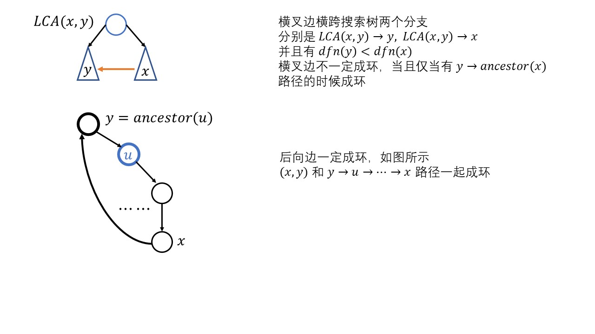

有向图的连通性
强连通分量SCC \textbf{SCC} SCC x , y x, y x , y x → y x \to y x → y y → x y \to x y → x

在 dfs ( x ) \text{dfs}(x) dfs ( x ) dfn ( x ) \text{dfn}(x) dfn ( x ) x x x 第一次被访问的时候的时间戳 ，即点刚被发现的时间 sub ( x ) \text{sub}(x) sub ( x ) x x x low ( x ) \text{low}(x) low ( x ) sub ( x ) \text{sub}(x) sub ( x ) 可以到达（追溯到）的 ，最早被发现的点 low ( x ) = min { dfn ( u ) ∣ u ∈ sub ( x ) } \text{low}(x) = \displaystyle\min \{\text{dfn}(u) \mid u \in \text{sub}(x)\} low ( x ) = min { dfn ( u ) ∣ u ∈ sub ( x ) }
对边 ( x , y ) (x, y) ( x , y ) dfs ( x ) \text{dfs}(x) dfs ( x )
树边，即深度优先搜索森林中的边，dfn ( y ) = 0 \text{dfn}(y) = 0 dfn ( y ) = 0 递归访问 dfs ( y ) \text{dfs}(y) dfs ( y ) low ( y ) \text{low}(y) low ( y ) low ( x ) \text{low}(x) low ( x )
后向边，如图中所示，此时有环，并且 dfn ( y ) < dfn ( x ) \text{dfn}(y) < \text{dfn}(x) dfn ( y ) < dfn ( x ) 相互可达 ，环中所有节点 的 low ( u ) \text{low}(u) low ( u ) dfn ( y ) \text{dfn}(y) dfn ( y ) low ( u ) ← min ( low ( u ) , d f n ( y ) ) \text{low}(u) \leftarrow \min(\text{low}(u), dfn(y)) low ( u ) ← min ( low ( u ) , d f n ( y ) )
前向边，y y y x x x x → y x \to y x → y
横叉边，不一定有环，如果存在环，说明 dfs ( y ) \text{dfs}(y) dfs ( y ) ( y , anc ( x ) ) (y, \text{anc}(x)) ( y , anc ( x ) ) anc ( x ) \text{anc}(x) anc ( x ) x x x u ← anc ( x ) u \leftarrow \text{anc}(x) u ← anc ( x ) dfs \text{dfs} dfs x x x ( f a ( u ) , u ) (fa(u), u) ( f a ( u ) , u ) dfn ( u ) < dfn ( f a ( u ) ) \text{dfn}(u) < \text{dfn}(fa(u)) dfn ( u ) < dfn ( f a ( u ) )
根据上面分析，只需要把横叉边和后向边统一成一个块 即可
性质 1 考虑强连通分量 C C C 第一个被发现的节点 为 u u u C C C u u u u u u 所有分支都被搜索完毕 的时候，立刻返回栈 中所有元素并清空栈 u u u
算法设计 定义追溯值 ，用栈维护当前环 C C C l o w ( u ) \bm{low}(u) l o w ( u ) u u u 最早的点 ，这个最早点 必须满足以下特征low ( u ) \text{low}(u) low ( u ) 追溯到的最早点 必须在栈中sub ( u ) \text{sub}(u) sub ( u ) 最早点 low ( u ) \text{low}(u) low ( u ) sub ( u ) \text{sub}(u) sub ( u ) 在当前栈中 能够追溯到的 dfn \text{dfn} dfn
性质 2 u u u C C C low ( u ) = dfn ( u ) \text{low}(u) = \text{dfn}(u) low ( u ) = dfn ( u ) 此时 u u u ，标记栈中所有元素属于一个强连通分量 C C C
可以设计出如下算法
dfs ( x ) \text{dfs}(x) dfs ( x ) x x x dfn ( x ) = low ( x ) = + + t i m e \text{dfn}(x) = \text{low}(x) = ++time dfn ( x ) = low ( x ) = + + t i m e 检查每一条边 ( x , y ) (x, y) ( x , y )
dfn ( y ) = 0 \text{dfn}(y) = 0 dfn ( y ) = 0 d f s ( y ) dfs(y) d f s ( y ) low ( y ) \text{low}(y) low ( y ) low ( x ) = min ( low ( x ) , low ( y ) ) \text{low}(x) = \min (\text{low}(x), \text{low}(y)) low ( x ) = min ( low ( x ) , low ( y ) ) dfn ( y ) ≠ 0 \text{dfn}(y) \neq 0 dfn ( y ) = 0 y y y ( x , y ) (x, y) ( x , y ) low ( u ) = min ( low ( u ) , dfn ( y ) ) \text{low}(u) = \min(\text{low}(u), \text{dfn}(y)) low ( u ) = min ( low ( u ) , dfn ( y ) ) y y y y y y y y y
如果 low ( x ) = dfn ( x ) \text{low}(x) = \text{dfn}(x) low ( x ) = dfn ( x ) x x x C C C x x x [ S [ t o p ] → x ] [S[top] \to x] [ S [ t o p ] → x ] 属于一个新的连通分量 C C C 标记这些元素并弹出 ，直到 x x x
算法实现时候有两个细节
对于树边 dfn ( y ) = 0 \text{dfn}(y) = 0 dfn ( y ) = 0 y ∈ sub ( x ) y \in \text{sub}(x) y ∈ sub ( x ) low ( y ) \text{low}(y) low ( y ) low ( x ) \text{low}(x) low ( x ) low ( x ) = min ( low ( x ) , low ( y ) ) \text{low}(x) = \min(\text{low}(x), \text{low}(y)) low ( x ) = min ( low ( x ) , low ( y ) )
而对于后向边或者横叉边，此时 dfn ( y ) ≠ 0 \text{dfn}(y) \neq 0 dfn ( y ) = 0 y y y dfn ( y ) \text{dfn}(y) dfn ( y ) low ( u ) \text{low}(u) low ( u ) y y y 当前环 C C C 其他环 C ′ C' C ′ 公共点 ，可能 low ( y ) ∈ C ′ \text{low}(y) \in C' low ( y ) ∈ C ′ 追溯最早点可能并不在当前环中 low ( y ) \text{low}(y) low ( y ) low ( x ) \text{low}(x) low ( x ) C C C low ( x ) = min ( low ( x ) , dfn ( y ) ) \text{low}(x) = \min(\text{low}(x), \text{dfn}(y)) low ( x ) = min ( low ( x ) , dfn ( y ) )
Tarjan \text{Tarjan} Tarjan 判环 ，因为执行 tarjan \text{tarjan} tarjan cnt \text{cnt} cnt tarjan \text{tarjan} tarjan u u u u u u 只能和自身构成强连通分量 cnt = n \text{cnt} = n cnt = n DAG \text{DAG} DAG
1 2 3 4 5 6 7 8 9 10 11 12 13 14 15 16 17 18 19 20 21 22 23 24 25 26 27 28 29 30 31 32 33 34 35 36 37 38 39 40 41 42 43 44 45 46 47 48 49 50 51 52 53 54 55 56 57 58 59 60 61 62 63 64 65 66 67 68 69 70 71 72 73 const int maxn = 1e4 + 10; int n, m; vector<int> G[maxn]; int cnt = 0; vector<int> bl(maxn, 0); vector<int> scc[maxn]; void getSCC cnt = 0; vector<int> dfn(maxn, 0), low(maxn, 0); stack<int> stk; vector<int> inq(maxn, 0); int tim = 0; function <void(int)> tarjan = [&](int x) { dfn[x] = low[x] = ++tim; stk.push(x), inq[x] = 1; for (auto y : G[x]) { if (!dfn[y]) { tarjan(y); low[x] = min(low[x], low[y]); } else if (inq[y]) { low[x] = min(low[x], dfn[y]); } } if (low[x] == dfn[x]) { cnt++; int u; do { u = stk.top(); stk.pop(), inq[u] = 0; bl[u] = cnt, scc[cnt].push_back(u); } while (u != x); } }; for (int i = 1; i <= n; i++) if (!dfn[i]) { tarjan(i); } } void init for (int i = 0; i < maxn; i++) G[i].clear(), scc[i].clear(); } int main freopen("input.txt" , "r" , stdin); cin >> n >> m; init(); for (int i = 0; i < m; i++) { int x, y; scanf("%d%d" , &x, &y); G[x].push_back(y); } getSCC(); int k; scanf("%d" , &k); for (int i = 0; i < k; i++) { int x, y; scanf("%d%d" , &x, &y); int res = bl[x] == bl[y] ? 1 : 0; res ? printf ("Yes" ) : printf ("No" ); if (i != k-1) printf ("\n" ); } }
和强连通分量相关的问题，经常需要缩点，缩点的代码实现如下
1 2 3 4 5 6 7 8 9 10 vector<int> G0[maxn]; void shrink for (int x = 1; x <= n; x++) { for (auto y : G[x]) { if (bl[x] == bl[y]) continue ; G0[bl[x]].push_back(bl[y]); } } }
tarjan 判断 DAG
有了上述概念，可以用 tarjan \text{tarjan} tarjan DAG \text{DAG} DAG dfs \text{dfs} dfs x x x v i s ( x ) = 1 vis(x) = 1 v i s ( x ) = 1 x x x v i s ( x ) = 2 vis(x) = 2 v i s ( x ) = 2
v i s ( x ) = 1 vis(x) = 1 v i s ( x ) = 1 v i s ( x ) = 2 vis(x) = 2 v i s ( x ) = 2 x x x sub ( x ) \text{sub}(x) sub ( x ) x ∪ sub ( x ) x \cup \text{sub}(x) x ∪ sub ( x )
dfs ( x ) \text{dfs}(x) dfs ( x ) ( x , y ) (x, y) ( x , y ) v i s ( y ) = 1 vis(y) = 1 v i s ( y ) = 1 v i s ( y ) = 2 vis(y) = 2 v i s ( y ) = 2 v i s ( y ) = 0 vis(y) = 0 v i s ( y ) = 0 ( x , y ) (x, y) ( x , y ) dfs ( y ) \text{dfs}(y) dfs ( y ) y y y
当一个点回溯完成，也就是 v i s ( x ) = 2 vis(x) = 2 v i s ( x ) = 2 vector \text{vector} vector n , n − 1 , ⋯ , 1 n, n-1, \cdots, 1 n , n − 1 , ⋯ , 1 reverse \text{reverse} reverse
1 2 3 4 5 6 7 8 9 10 11 12 13 14 15 16 17 18 19 20 21 vector<int> vec; int n; bool topo vector<int> vis(maxn, 0); function <bool(int)> dfs = [&](int x) { vis[x] = 1; for (auto y : G[x]) { if (vis[y] == 1) return false ; else if (!vis[y] && dfs(y) == false ) return false ; } vis[x] = 2, vec.push_back(x); return true ; }; for (int i = 1; i <= n; i++) if (!vis[i]) { if (!dfs(i)) return false ; } reverse(vec.begin(), vec.end()); return true ; }
无向图的连通性
追溯值 x x x 不通过搜索树上的边能够找到的最早节点 low ( u ) \text{low}(u) low ( u ) u u u 最早点 最早点 必须满足以下条件sub ( u ) \text{sub}(u) sub ( u ) 1 1 1 非搜索树边 ，能够连到 sub ( u ) \text{sub}(u) sub ( u )
low ( x ) \text{low}(x) low ( x )
dfs ( x ) \text{dfs}(x) dfs ( x ) x x x low ( x ) = dfn ( x ) = + + t i m \text{low}(x) = \text{dfn}(x) = ++tim low ( x ) = dfn ( x ) = + + t i m 对于边 ( x , y ) (x, y) ( x , y ) dfn ( y ) = 0 \text{dfn}(y) = 0 dfn ( y ) = 0 y y y x x x low ( x ) = min ( low ( x ) , low ( y ) ) \text{low}(x) = \min(\text{low}(x), \text{low}(y)) low ( x ) = min ( low ( x ) , low ( y ) ) dfn ( y ) ≠ 0 \text{dfn}(y) \neq 0 dfn ( y ) = 0 ( x , y ) (x, y) ( x , y ) dfn ( y ) \text{dfn}(y) dfn ( y ) low ( x ) \text{low}(x) low ( x ) low ( x ) \text{low}(x) low ( x ) x x x low ( x ) = min ( low ( x ) , dfn ( y ) ) \text{low}(x) = \min(\text{low}(x), \text{dfn}(y)) low ( x ) = min ( low ( x ) , dfn ( y ) )
桥
无向图中的边 ( x , y ) (x, y) ( x , y ) ( x , y ) (x, y) ( x , y ) dfn ( x ) < low ( y ) \text{dfn}(x) < \text{low}(y) dfn ( x ) < low ( y )
桥一定是搜索树中的边 ，否则的话，删去这条非树边，任意两点 x , y x, y x , y 任意一个简单环中的边都不是桥，因为删除任意一条边，对于简单环，图依然是连通的
根据以上分析，在 dfs ( x ) \text{dfs}(x) dfs ( x ) dfs ( y ) \text{dfs}(y) dfs ( y ) dfn ( x ) < low ( y ) \text{dfn}(x) < \text{low}(y) dfn ( x ) < low ( y ) ( x , y ) (x, y) ( x , y ) 树边 dfs ( f a ) \text{dfs}(fa) dfs ( f a ) ( f a , x ) (fa, x) ( f a , x ) ( x , f a ) (x, fa) ( x , f a ) ( x , f a ) (x, fa) ( x , f a ) 不能够 用 dfn ( f a ) \text{dfn}(fa) dfn ( f a ) low ( x ) \text{low}(x) low ( x ) ( f a , x ) (fa, x) ( f a , x ) ( f a , x ) (fa, x) ( f a , x ) ( x , f a ) (x, fa) ( x , f a ) dfn ( f a ) \text{dfn}(fa) dfn ( f a ) low ( x ) \text{low}(x) low ( x )
在 dfs \text{dfs} dfs 前向弧编号 ，dfs ( x , i d ) \text{dfs}(x, id) dfs ( x , i d ) i d id i d x x x x x x i = ( x , y ) i = (x, y) i = ( x , y ) dfn ( y ) ≠ 0 \text{dfn}(y) \neq 0 dfn ( y ) = 0 i ≠ i d ⊕ 1 i \neq id \oplus 1 i = i d ⊕ 1 low ( x ) = min ( low ( x ) , dfn ( y ) ) \text{low}(x) = \min(\text{low}(x), \text{dfn}(y)) low ( x ) = min ( low ( x ) , dfn ( y ) )
1 2 3 4 5 6 7 8 9 10 11 12 13 14 15 16 17 18 19 20 21 22 23 24 25 26 27 28 29 using namespace Graph; vector<int> bridge(maxn, 0); void getBridge vector<int> dfn(maxn, 0), low(maxn, 0); int tim = 0; function <void(int, int)> tarjan = [&](int x, int id) { dfn[x] = low[x] = ++tim; for (int i = h[x]; i; i = ne[i]) { int y = ver[i]; if (!dfn[y]) { tarjan(y, i); low[x] = min(low[x], low[y]); if (dfn[x] < low[y]) bridge[i] = bridge[i^1] = 1; } else if (i != (id ^ 1)) { low[x] = min(low[x], dfn[y]); } } }; for (int i = 1; i <= n; i++) { if (!dfn[i]) tarjan(i, 0); } for (int i = 2; i <= idx; i += 2) if (bridge[i]) { printf ("%d %d\n" , ver[i^1], ver[i]); } }
割顶
u u u G G G u u u v v v sub ( v ) \text{sub}(v) sub ( v ) u u u u u u x x x 搜索树上存在子节点 y y y dfn ( x ) ⩽ low ( y ) \text{dfn}(x) \leqslant \text{low}(y) dfn ( x ) ⩽ low ( y )
特别地，如果 x x x x x x y 1 , y 2 y_1, y_2 y 1 , y 2
1 2 3 4 5 6 7 8 9 10 11 12 13 14 15 16 17 18 19 20 21 22 23 24 25 26 27 28 29 30 31 vector<int> cut(maxn, 0); void getCut vector<int> dfn(maxn, 0), low(maxn, 0); int tim = 0; function <void(int, const int)> tarjan = [&](int x, const int root) { dfn[x] = low[x] = ++tim; int fl = 0; for (int i = h[x]; i; i = ne[i]) { int y = ver[i]; if (!dfn[y]) { tarjan(y, root); low[x] = min(low[x], low[y]); if (low[y] >= dfn[x]) { fl++; if (x != root || (x == root && fl >= 2)) cut[x] = 1; } } else low[x] = min(low[x], dfn[y]); } }; for (int i = 1; i <= n; i++) if (!dfn[i]) { tarjan(i, i); } for (int i = 1; i <= n; i++) if (cut[i]) { printf ("%d " , i); } printf ("\n" ); }
边双连通分量
无向图不存在桥，称为边双连通图，极大 边双连通图称为边双连通分量
无向图是边双连通图，当且仅当任意一条边都包含在至少一个简单环 中（简单环即不自交的环）
算法 dfs \text{dfs} dfs tarjan \text{tarjan} tarjan dfs ( x ) \text{dfs}(x) dfs ( x ) x x x
1 2 3 4 5 6 7 8 9 10 11 12 13 14 15 16 17 18 19 20 21 22 23 vector<int> bl(maxn, 0); void geteDCC fill(bl.begin(), bl.end(), 0); int num = 0; function <void(int)> dfs = [&](int x) { bl[x] = num; for (int i = h[x]; i; i = ne[i]) { int y = ver[i]; if (bl[y] || bridge[i]) continue ; dfs(y); } }; for (int i = 1; i <= n; i++) { if (!bl[i]) { num++; dfs(i); } } printf ("There are %d e-DCCs.\n" , num); for (int i = 1; i <= n; i++) printf ("%d belongs to DCC %d.\n" , i, bl[i]); }
缩点 ( x , y ) (x, y) ( x , y ) bl ( x ) \text{bl}(x) bl ( x ) bl ( y ) \text{bl}(y) bl ( y ) eDCC \text{eDCC} eDCC
1 2 3 4 5 6 7 8 9 10 11 12 13 14 15 16 17 18 19 20 21 struct Edge { int ver; }; vector<Edge> edges; vector<int> G[maxn]; void addCC(int x, int y) { edges.push_back(Edge{y}); G[x].push_back(edges.size()-1); } void shrink for (int i = 1; i <= idx; i++) { int x = ver[i^1], y = ver[i]; if (bl[x] == bl[y]) continue ; addCC(bl[x], bl[y]); } printf ("After shink:\n" ); for (int i = 0; i < (int)edges.size(); i += 2) { printf ("%d %d\n" , edges[i^1].ver, edges[i].ver); } }
点双连通分量
无向图不存在割顶，这样的子图称为点双连通图，极大 点双连通子图称为点双连通分量
无向图是点双连通图，当且仅当满足以下条件之一⩽ 2 \leqslant 2 ⩽ 2
证明如下，如果任意两点 x , y x, y x , y x → y x \to y x → y 2 2 2 x , y x, y x , y x , y x, y x , y 2 2 2 x , y x, y x , y x , y x, y x , y x , y x, y x , y x , y x, y x , y x , y x, y x , y p p p p p p
性质 vDCC \text{vDCC} vDCC vDCC \text{vDCC} vDCC 2 2 2 eDCC \text{eDCC} eDCC vDCC \text{vDCC} vDCC
 微信
微信 支付宝
支付宝